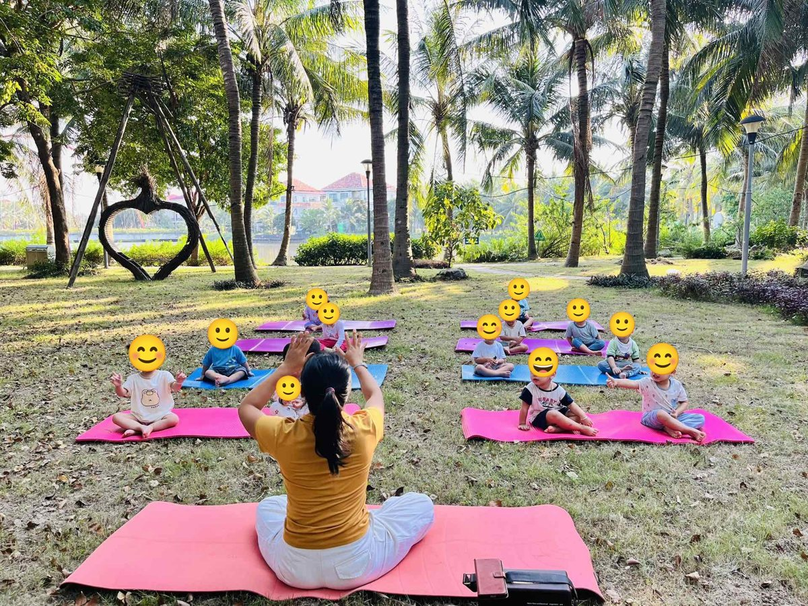

Thủ ấn (mudra) trong yoga: cách làm 12 ấn phổ biến, tầng ý nghĩa sâu xa và lợi ích thật cho sức khỏe
“Chạm nhẹ đầu ngón trỏ vào đầu ngón cái. Nhẹ thôi, như chạm vào cánh bướm.” Cô vừa dứt lời thì một bạn mới đến lớp hỏi nhỏ: “Cô ơi, để tay thế này có tác dụng thật không, hay chỉ cho đẹp ảnh ạ?”
Cả lớp bật cười. Cô cũng cười. Vì đó là câu chính cô từng hỏi thầy, nhiều năm trước.
Câu trả lời thật không gói được trong một chữ “có” hay “không”. Bàn tay là nơi có nhiều đầu dây thần kinh cảm giác bậc nhất trên cơ thể. Một cái chạm nhỏ ở đầu ngón tay cho tâm một chỗ để bám. Đó là phần khoa học hiểu được. Còn phần người xưa gửi vào mỗi ấn, năm đại, các luồng khí, những vị thần, là một kho biểu tượng để luyện tâm, đẹp và sâu, nhưng chưa được đo bằng máy.
Bài này Sophia viết cho bạn ấy, và cho những ai từng ngồi thiền mà không biết đặt tay ở đâu. Cách làm từng ấn, ý nghĩa của nó, và nói thật khoa học đã biết đến đâu.
Anjali mudra, ấn chắp tay trước ngực. Ấn đầu tiên và cũng là ấn cuối cùng của mỗi buổi tập.
Mudra trong tiếng Phạn nghĩa là dấu ấn, con dấu, cũng là cử chỉ. Người Việt quen gọi là thủ ấn, ấn của bàn tay, hay nói “bắt ấn”. Một con dấu đóng lên giấy để niêm lại một điều. Một ấn tay đóng lên tâm để giữ lại một trạng thái.
Thủ ấn không chỉ thuộc về yoga. Trong múa cổ điển Ấn Độ, sách Natya Shastra ghi lại hàng chục cử chỉ bàn tay, mỗi cử chỉ kể một chữ, một cảm xúc. Trong đạo Phật, mỗi pho tượng Phật cầm một ấn riêng: ấn thiền định, ấn chạm đất, ấn chuyển pháp luân, ấn vô úy. Đi chùa ở Việt Nam, chỉ cần để ý bàn tay tượng là thấy.
Trong các sách hatha yoga cổ, chữ mudra rộng hơn bàn tay nhiều. Hatha Yoga Pradipika (thế kỷ 15) dành cả chương ba cho mười mudra, phần lớn là các “khóa” của thân và hơi thở. Gheranda Samhita kể hai mươi lăm mudra. Còn những ấn tay dùng cho sức khỏe mà mình hay gặp hôm nay, như Prana, Surya, Varuna, phần lớn được hệ thống lại và phổ biến rộng trong thế kỷ 20, qua những cuốn sách như Mudras: Yoga in Your Hands của Gertrud Hirschi. Biết điều này để mình trân trọng ấn tay, mà không nghĩ mọi danh sách “công dụng” trên mạng đều có từ ngàn năm.
🔬 Phần có nghiên cứu
Bàn tay có vùng não rất lớn phụ trách. Chạm vào chính mình làm dịu căng thẳng. Thở chậm, ngồi thẳng, thiền có lợi đã được đo. Một bài thiền có động tác chạm ngón tay đã được thử trên người có vấn đề trí nhớ.
🪷 Phần là quan niệm truyền thống
Mỗi ngón một đại, mỗi ấn điều chỉnh một luồng khí, một luân xa, một vị thần. Đây là ngôn ngữ biểu tượng để luyện tâm, chưa được chứng minh như một cơ chế sinh lý.
Năm ngón tay, năm đại
Theo cách nhìn của yoga và Ayurveda, cơ thể và vũ trụ cùng được dệt từ năm đại (pancha mahabhuta): đất, nước, lửa, khí và không gian. Bàn tay là tấm bản đồ nhỏ của năm đại ấy. Chạm ngón này vào ngón cái là “gọi” đại ấy lên. Gập ngón này dưới ngón cái là làm dịu đại ấy xuống.
Chạm vào một đầu ngón tay
để xem ngón ấy ứng với đại nào và mang ý nghĩa gì.
Một vài trường phái xếp năm đại vào các ngón hơi khác. Cách xếp trên là cách phổ biến nhất trong sách về thủ ấn hiện nay.
Ba tầng của một thủ ấn
Cô hay giải thích một ấn tay theo ba tầng, từ cái sờ thấy được đến cái chỉ cảm được.
Tầng thân
Đầu ngón tay chạm nhau là một cảm giác rõ, ấm, có mạch đập nhẹ. Tay đặt yên trên đùi thì vai thả xuống, lồng ngực mở ra, cột sống dễ thẳng. Bàn tay bận rộn cả ngày, nay được nghỉ.
Tầng tâm, trí
Ấn là một cái neo. Tâm chạy đi, mình quay về đầu ngón tay. Làm cùng một ấn mỗi lần ngồi thiền, lâu dần nó thành tín hiệu: tay vào ấn là tâm biết đã đến giờ lắng xuống.
Tầng khí, tinh thần
Mỗi ấn mang một ý nguyện: hợp nhất, biết ơn, kiên nhẫn, vững vàng. Đặt tay vào ấn là gửi ý nguyện ấy vào hơi thở. Đây là tầng của biểu tượng, sâu nhất và riêng nhất của mỗi người.
Ba tầng này ứng với năm thể của con người trong yoga: thân, khí, tâm, trí và tinh thần. Ấn tay nhỏ, nhưng chạm được cả năm. Ai muốn đọc thêm có bài năm thể con người.
12 thủ ấn phổ biến: cách làm và ý nghĩa
Chấm màu ở đầu ngón trong mỗi hình là đại của ngón ấy: lửakhíkhôngđấtnước. Mỗi ấn có thêm một nhãn nhỏ nói thật mức bằng chứng khoa học.
Cách làm. Đầu ngón trỏ chạm nhẹ đầu ngón cái thành một vòng tròn nhỏ. Ba ngón còn lại duỗi mềm, khép hờ. Mu bàn tay đặt trên đùi hoặc đầu gối. Ngửa lòng bàn tay lên trời là Gyan. Úp lòng bàn tay xuống gối là Chin. Mỗi trường phái gọi tên hơi khác, có nơi gọi ngược lại, điều đó không quan trọng bằng cảm giác của mình.
Tầng ý nghĩa. Ngón cái tượng trưng cho cái lớn, ý thức chung của muôn loài. Ngón trỏ là cái tôi nhỏ, ngón hay chỉ trỏ, phán xét. Ngón trỏ cúi xuống chạm ngón cái: cái tôi nhỏ quay về với cái lớn. Ba ngón còn lại là ba guna, ba tính chất của tự nhiên (sattva trong sáng, rajas động, tamas trì trệ), người tập để chúng duỗi ra một bên. Vòng tròn không có đầu cuối, như hơi thở vào ra không ngừng.
Truyền thống dùng khi. Ấn quen thuộc nhất khi ngồi thiền và tập thở. Ngửa tay để mở ra, đón nhận, thấy nhẹ và tỉnh. Úp tay để gom vào, tiếp đất, thấy vững và yên.
Chưa có bằng chứng đáng tin Chưa có nghiên cứu đáng tin nào đo riêng ấn này. Điều có thật là: ngồi thẳng, thở chậm và có một chỗ cảm giác rõ ràng ở đầu ngón tay giúp sự chú ý có chỗ bám.
💛 Cô dùng ấn này mở đầu gần như mọi buổi thiền. Ai hay bồn chồn, cô gợi ý úp tay. Ai buồn ngủ, ngửa tay.
Anjali mudraẤn chắp tay, Namaste
Cả năm đại gặp nhau
Cách làm. Hai lòng bàn tay áp vào nhau trước giữa ngực. Hai ngón cái chạm nhẹ vào xương ức. Khuỷu tay thả xuống, vai xa tai. Có thể để một khoảng rỗng nhỏ giữa hai lòng bàn tay, như đang giữ một nụ sen.
Tầng ý nghĩa. “Anjali” trong tiếng Phạn là dâng lên, kính tặng. Tay trái và tay phải, hai nửa của cơ thể, trong yoga còn gọi là mặt trăng và mặt trời, gặp nhau ở chỗ trái tim. Người Việt mình quen với cử chỉ này từ cửa chùa, từ cách bà, mẹ chắp tay. Lời chào Namaste đi kèm thường được hiểu là “phần tốt đẹp trong tôi kính chào phần tốt đẹp trong bạn”.
Truyền thống dùng khi. Mở đầu và kết thúc buổi tập, lúc cảm ơn, lúc cần lắng lại. Nhiều người dùng khi lòng rối, khi cần biết ơn.
Có nghiên cứu gần Một thí nghiệm năm 2021 cho người tham gia tự đặt tay lên ngực và bụng trong 20 giây trước một bài kiểm tra căng thẳng. Hormone cortisol của nhóm này tăng ít hơn nhóm không chạm. Anjali không giống hệt cử chỉ ấy, nhưng cùng tinh thần: một cái chạm dịu vào chính mình.
💛 Cuối mỗi buổi, cả lớp chắp tay, cúi đầu. Có học viên bảo đó là ba giây cô thích nhất trong ngày.
Dhyana mudraẤn thiền định
Tĩnh, rỗng như chiếc bát
Cách làm. Hai bàn tay ngửa, đặt chồng lên nhau trong lòng, sát bụng dưới. Hai đầu ngón cái chạm nhẹ, tạo thành một hình bầu dục. Trong thiền Tào Động Nhật Bản, tay trái đặt trên tay phải. Nhiều dòng khác đặt tay phải trên tay trái. Chọn cách nào thấy tự nhiên.
Tầng ý nghĩa. Đây là ấn của tượng Phật ngồi thiền. Hai bàn tay như chiếc bát rỗng: không cầm nắm gì, sẵn sàng đón nhận. Hai ngón cái chạm nhau là sự tỉnh thức. Ấn này còn là tấm gương nhỏ của tâm: buồn ngủ thì hai ngón cái sụp xuống, căng thẳng thì chúng ép chặt thành ngọn núi.
Truyền thống dùng khi. Thiền ngồi lâu, thiền im lặng, lúc muốn quay vào trong.
Chưa có bằng chứng đáng tin Chưa có nghiên cứu riêng về ấn. Thiền ngồi nói chung thì có nhiều nghiên cứu về giảm lo âu, căng thẳng ở mức vừa phải.
💛 Thầy Shunryu Suzuki tả hai ngón cái chạm nhau như đang giữ một vật quý trong tay. Cô thấy câu ấy đẹp hơn mọi lời giải thích.
Prana mudraẤn sinh lực
Lửa + Đất + Nước
Cách làm. Đầu ngón áp út và ngón út cùng chạm nhẹ đầu ngón cái. Ngón trỏ và ngón giữa duỗi thẳng, mềm. Hai tay cùng làm, mu tay đặt trên đùi.
Tầng ý nghĩa. Ngón cái là lửa, ngón áp út là đất, ngón út là nước. Ba đại gặp nhau: lửa làm ấm, đất cho vững, nước nuôi dưỡng. Ấn mang tên prana, sinh lực, thứ làm cho mình sống chứ không chỉ là không khí.
Truyền thống dùng khi. Dùng khi mệt, uể oải, lúc chiều xuống, sau ốm. Hay đi kèm hít vào đều, ngồi thẳng.
Chưa có bằng chứng đáng tin Trên mạng hay viết ấn này “tăng miễn dịch, sáng mắt”. Cô chưa tìm thấy nghiên cứu đáng tin nào chứng minh. Mệt kéo dài vài tuần cần đi khám, không chỉ ngồi bắt ấn.
💛 Cô hay gợi ý ấn này cho các chị văn phòng lúc ba giờ chiều: ba phút ngồi thẳng, thở đều, uống một cốc nước.
Apana mudraẤn thải, ấn đi xuống
Lửa + Không + Đất
Cách làm. Đầu ngón giữa và ngón áp út cùng chạm nhẹ đầu ngón cái. Ngón trỏ và ngón út duỗi.
Tầng ý nghĩa. Apana là luồng khí đi xuống trong năm luồng khí của yoga cổ, lo việc đào thải và tiếp đất. Ấn này “mời” mọi thứ đi xuống, đi ra: thức ăn đã tiêu, cảm xúc đã cũ, suy nghĩ đã thừa.
Truyền thống dùng khi. Hay dùng cho tiêu hóa chậm, bụng nặng, cảm giác bứt rứt cần buông xuống.
Chưa có bằng chứng đáng tin Chưa có nghiên cứu đáng tin. Thở bụng chậm và đi bộ nhẹ sau ăn thì có ích cho tiêu hóa, nên cô hay ghép ba thứ này với nhau.
💛 Cô ghép ấn này với thở ra dài và ý đi xuống bụng, giống bài điều khí.
Apana Vayu mudraẤn trái tim, Mrita Sanjivani
Khí giảm, Lửa + Không + Đất
Cách làm. Gập ngón trỏ để đầu ngón chạm gốc ngón cái. Đầu ngón giữa và ngón áp út chạm đầu ngón cái. Ngón út duỗi thẳng. Hai tay cùng làm.
Tầng ý nghĩa. Là Apana mudra cộng thêm Vayu mudra. Tên cổ Mrita Sanjivani nghĩa là “làm sống lại”, nên sách vở hay gọi là ấn cứu tim. Ý nghĩa sâu hơn: làm dịu luồng khí bốc lên, đưa sinh lực về lại ngực và bụng.
Truyền thống dùng khi. Dùng khi tim đập nhanh vì lo lắng, ngực bó, hơi thở gấp.
Nghiên cứu nhỏ, chưa đủ Có một nghiên cứu nhỏ ở Ấn Độ năm 2020 trên người tăng huyết áp, thấy huyết áp giảm sau một thời gian bắt ấn. Nghiên cứu ít người, thiết kế đơn giản, chưa đủ để kết luận. Ấn này không thay được thuốc huyết áp, thuốc tim.
💛 Đau ngực, khó thở đột ngột là cấp cứu. Gọi 115 trước, không ngồi bắt ấn chờ đỡ.
Surya mudraẤn mặt trời, Agni mudra
Lửa tăng, Đất giảm
Cách làm. Gập ngón áp út vào lòng bàn tay. Ngón cái đè nhẹ lên đốt giữa của ngón áp út. Ba ngón còn lại duỗi.
Tầng ý nghĩa. Ngón cái là lửa, ngón áp út là đất. Lửa đè lên đất: làm ấm, làm nhẹ, làm “cháy” sự nặng nề, trì trệ. Surya là mặt trời.
Truyền thống dùng khi. Hay dùng vào buổi sáng, ngày lạnh, lúc thấy nặng nề, chậm chạp.
Chưa có bằng chứng đáng tin Nhiều trang viết ấn này “giảm cân, giảm mỡ máu, chữa tuyến giáp”. Cô chưa tìm thấy bằng chứng đáng tin nào. Những việc ấy cần ăn uống, vận động, ngủ nghỉ và theo dõi của bác sĩ.
💛 Cô xem ấn này như một lời nhắc buổi sáng: dậy, ra nắng, vận động. Không phải một viên thuốc.
Vayu mudraẤn gió
Khí giảm
Cách làm. Gập ngón trỏ để đầu ngón chạm gốc ngón cái. Ngón cái đè nhẹ lên đốt giữa ngón trỏ. Ba ngón còn lại duỗi.
Tầng ý nghĩa. Ngón trỏ là khí, gió. Đặt nó dưới ngón cái là làm dịu gió: gió trong bụng, gió trong đầu. Theo Ayurveda, khi khí (vata) quá nhiều, người dễ khô, lạnh, lo, khó ngủ.
Truyền thống dùng khi. Dùng khi đầy hơi, bồn chồn, suy nghĩ chạy không ngừng.
Chưa có bằng chứng đáng tin Chưa có nghiên cứu đáng tin. Nếu đầy hơi kéo dài, đau bụng, sụt cân, cần đi khám.
💛 Cô hay ghép ấn này với thở ra qua lòng bàn chân, cho những tối đầu óc nhiều gió.
Shuni mudraẤn kiên nhẫn
Lửa + Không
Cách làm. Đầu ngón giữa chạm nhẹ đầu ngón cái. Ba ngón còn lại duỗi.
Tầng ý nghĩa. Ngón giữa là không gian. Trong chiêm tinh Ấn Độ, ngón giữa gắn với sao Thổ, vị sao của thời gian, kỷ luật và nhẫn nại. Lửa chạm không gian: cho mình thêm chỗ, thêm khoảng trống trước khi phản ứng.
Truyền thống dùng khi. Dùng lúc nóng nảy, nôn nóng, cần giữ một cam kết.
Chưa có bằng chứng đáng tin Chưa có nghiên cứu riêng. Điều giúp mình bớt nóng là khoảng dừng vài hơi thở chậm, ấn này là cái cớ để dừng lại.
💛 Cô thích ấn này nhất trong các ấn ít người biết. Ba hơi thở với Shuni trước khi trả lời một tin nhắn làm mình giận.
Prithvi mudraẤn đất
Lửa + Đất
Cách làm. Đầu ngón áp út chạm nhẹ đầu ngón cái. Ba ngón còn lại duỗi.
Tầng ý nghĩa. Prithvi là đất. Đất cho mình chỗ đứng, sự vững vàng, sự nuôi dưỡng. Ấn này nhắc mình đặt chân xuống đất, theo nghĩa đen và nghĩa bóng.
Truyền thống dùng khi. Dùng lúc chông chênh, thiếu vững, sau những ngày đi lại nhiều, mất ngủ.
Chưa có bằng chứng đáng tin Chưa có nghiên cứu đáng tin. Đi chân đất trên cỏ, ngồi xuống đất, thở chậm thì là những việc nhẹ nhàng, ai cũng làm được.
💛 Ở lớp công viên, cô cho học viên làm ấn này khi ngồi trên cỏ, chân trần.
Varuna mudraẤn nước
Lửa + Nước
Cách làm. Đầu ngón út chạm nhẹ đầu ngón cái. Ba ngón còn lại duỗi. Chạm rất nhẹ, ngón út nhỏ và dễ mỏi.
Tầng ý nghĩa. Varuna là thần của nước. Nước mềm, chảy, ôm lấy mọi hình dạng. Ấn này nhắc sự mềm mại, uyển chuyển, nước mắt được chảy ra.
Truyền thống dùng khi. Dùng khi thấy khô, cứng, khó mở lòng.
Chưa có bằng chứng đáng tin Chưa có nghiên cứu đáng tin. Uống đủ nước thì nên làm, với hay không với ấn.
💛 Cô hay nói đùa: ấn nước hiệu quả nhất là cầm cốc nước lên uống.
Hakini mudraẤn tập trung
Năm cặp đầu ngón chạm nhau
Cách làm. Hai bàn tay đối nhau trước ngực hoặc trước trán. Đầu năm cặp ngón tay chạm nhau: cái với cái, trỏ với trỏ, cho đến út với út. Lòng bàn tay tách ra, như một mái vòm nhỏ. Mắt có thể nhìn vào đầu ngón tay, rồi nhắm.
Tầng ý nghĩa. Hakini là vị nữ thần cai quản luân xa Ajna, luân xa giữa hai lông mày, nơi của trực giác và sự sáng suốt. Hai bàn tay chạm nhau là hai bán cầu, trái và phải, lý trí và cảm xúc, gặp nhau.
Truyền thống dùng khi. Dùng trước khi học, làm việc cần tập trung, lúc cố nhớ một điều.
Chưa có bằng chứng đáng tin Có nhiều bài viết nói ấn này “cân bằng hai bán cầu não, tăng trí nhớ”. Cô chưa tìm thấy nghiên cứu công bố đáng tin nào đo điều đó. Ngồi thẳng, thở chậm, nhìn vào một điểm thì giúp tập trung, phần ấy thì đã có nhiều nghiên cứu.
💛 Học sinh rất thích ấn này vì trông như cái lồng đèn. Người lớn thì hay dùng trước khi họp.

Lớp các con ở Ecopark. Các con rất thích bắt ấn vì nó giống trò chơi ngón tay, và ngồi yên được lâu hơn hẳn khi tay có việc để làm.
Chọn ấn theo trạng thái lúc này
Không cần thuộc cả mười hai ấn. Phần lớn người tập chỉ dùng hai, ba ấn quen tay. Chọn một trạng thái gần với mình lúc này, cô gợi ý ấn và cách thở đi kèm.
Chọn một trạng thái, cô gợi ý ấn hợp với lúc này.
Giữ ấn cùng nhịp thở
Ngồi thẳng trên ghế hoặc trên gạch, hai bàn chân chạm sàn hoặc xếp bằng. Chọn một ấn, chọn số phút, rồi thở theo vòng sáng: vòng nở ra thì hít vào, vòng thu lại thì thở ra. Có tiếng chuông nhỏ lúc bắt đầu và lúc hết giờ, nên có thể nhắm mắt.
Ấn
Nhịp thở
Thời gian
Gyan mudraSẵn sàng
Video: tám ấn, mỗi ấn hai hơi thở
Video dài khoảng hai phút, dùng được như một bài khởi động cho buổi thiền, hoặc để học thuộc hình bàn tay. Mỗi ấn hai hơi thở: hít vào 3 nhịp, thở ra 4 nhịp, theo vòng sáng nở ra rồi thu lại. Có tiếng chuông nhỏ khi chuyển ấn.
Gyan, Chin, Anjali, Prana, Apana, Shuni, Hakini, Dhyana. Hình bàn tay do Sophia Yoga tự vẽ.
Giữ ấn thế nào cho đúng
Phần lớn những lỗi cô gặp ở lớp không nằm ở ngón tay, mà ở chỗ khác.
🌿 Cột sống trước, ngón tay sau
Ngồi gù mà bắt ấn đẹp đến đâu cũng không lắng được. Hai ụ ngồi chạm đất, đỉnh đầu nhẹ lên trần, cằm hơi thu. Ngồi ghế cũng được, lưng không tựa.
🦋 Chạm nhẹ như cánh bướm
Đầu ngón chạm nhau vừa đủ cảm thấy, không ép, không bấm. Ép mạnh là căng thẳng đi vào tay. Ngón tay trắng bệch là đang ép quá.
🖐️ Các ngón còn lại duỗi mềm
Duỗi nhưng không cứng như que. Cổ tay thả lỏng, mu tay đặt trên đùi, gần đầu gối. Vai xa tai.
🌬️ Hơi thở là gốc
Ấn không làm thay việc thở. Thở bằng mũi, chậm, êm, thở ra dài hơn một chút. Ấn chỉ là chỗ để tâm nằm yên trong lúc thở.
⏱️ Bao lâu là đủ
Ba đến năm phút là đủ cho người mới. Truyền thống kundalini yoga hay dùng mốc 3, 11 hoặc 31 phút. Có thể chia nhỏ, ba lần năm phút trong ngày. Đều đặn quan trọng hơn lâu.
🤲 Hai tay cùng làm
Phần lớn các ấn làm cả hai tay. Ngồi xe, xếp hàng, chờ thang máy, một tay cũng được, không ai để ý.
Chuỗi thủ ấn 12 phút
Đi từ ấn mở, qua ấn nuôi, đến ấn tĩnh, rồi khép lại. Bấm bắt đầu, có chuông nhỏ mỗi lần đổi bước. Bấm vào một bước bất kỳ để nhảy tới.
Từ Anjali đến Dhyana
Ngồi cho cột sống, chắp tay Anjali Ngồi thẳng, vai thả. Chắp tay trước ngực. Ba hơi thở dài. Lặng thầm một ý nguyện nhỏ cho buổi ngồi.
Chin mudra, úp tay xuống gối Trỏ chạm cái, úp tay. Thở tự nhiên, rồi để hơi thở ra dài dần. Cảm giác vững, tiếp đất.
Gyan mudra, ngửa tay Lật hai bàn tay lên trời, giữ vòng tròn. Hít vào để ý lồng ngực nở. Thấy nhẹ, thấy mở.
Prana mudra, ấn sinh lực Áp út và út chạm ngón cái. Hít vào đều, thở ra đều. Để ý hơi ấm ở đầu ngón tay.
Hakini mudra, nhìn rồi nhắm Năm cặp đầu ngón chạm nhau trước ngực. Mở mắt nhìn đầu ngón một lúc, rồi nhắm lại, giữ hình ảnh ấy.
Dhyana mudra, ngồi im Hai tay chồng nhau trong lòng, hai ngón cái chạm nhẹ. Không làm gì nữa. Chỉ ngồi, chỉ thở, chỉ biết.
Anjali khép lại Chắp tay trước ngực, cúi đầu nhẹ. Cảm ơn hơi thở, cảm ơn cơ thể. Mở mắt chậm.
Ở bước 4, ai đang thấy bồn chồn có thể đổi Prana bằng Shuni hoặc Vayu. Ai bụng nặng đổi bằng Apana.
Khoa học nói gì về thủ ấn
Sophia đọc khá kỹ phần này trước khi viết, vì trên mạng có rất nhiều lời hứa: ấn này chữa tim, ấn kia giảm cân, ấn nọ hết điếc. Nói thật lòng, bằng chứng còn mỏng. Nhưng mỏng không có nghĩa là không có gì.
Bàn tay chiếm một vùng não rất lớn. Khi nhà phẫu thuật thần kinh Wilder Penfield kích thích từng điểm trên vỏ não người bệnh trong lúc mổ, ông vẽ được “bản đồ người tí hon” trong não. Trên bản đồ ấy, bàn tay và ngón tay to vượt hẳn so với lưng hay chân (Penfield và Boldrey, Brain 1937). Một cái chạm nhỏ ở đầu ngón tay vì thế là một tín hiệu cảm giác rõ, đủ để làm chỗ neo cho sự chú ý.
Chạm vào chính mình làm dịu căng thẳng. Một thử nghiệm ngẫu nhiên ở Đức: nhóm được hướng dẫn tự đặt tay lên ngực và bụng trong 20 giây trước một bài kiểm tra gây căng thẳng có lượng cortisol tăng ít hơn nhóm chứng (Dreisoerner và cộng sự, Comprehensive Psychoneuroendocrinology 2021). Ấn Anjali, hai tay ôm bụng cuối buổi tập, gần với tinh thần ấy.
Kirtan Kriya, bài thiền có chạm ngón tay. Người tập vừa ngân bốn âm Sa Ta Na Ma, vừa lần lượt chạm ngón trỏ, giữa, áp út, út vào ngón cái, mười hai phút mỗi ngày. Một nghiên cứu sơ bộ trên một nhóm nhỏ người có vấn đề trí nhớ, tập tám tuần, thấy lưu lượng máu ở một số vùng não trán tăng lên và vài bài kiểm tra trí nhớ tốt hơn (Newberg và cộng sự, Journal of Alzheimer's Disease 2010). Thử nghiệm ngẫu nhiên trên 60 người suy giảm trí nhớ chủ quan, so Kirtan Kriya với nghe nhạc trong 12 tuần: cả hai nhóm đều cải thiện trí nhớ, tâm trạng và giấc ngủ (Innes và cộng sự 2016). Điều cần nói rõ: không ai tách được phần ngón tay ra khỏi phần âm thanh và phần ngồi yên. Bài mantra có hướng dẫn chơi Sa Ta Na Ma cùng các con.
Nghiên cứu riêng về ấn tay thì sao? Có, nhưng ít và nhỏ. Một nghiên cứu ở Ấn Độ năm 2020 cho người tăng huyết áp tập Apana Vayu mudra, thấy huyết áp giảm, nhưng số người ít và thiết kế còn đơn giản (Sunitha và Sharma, International Journal of Health Sciences and Research). Bài tổng quan năm 2025 trên tạp chí Ayurveda của Ahlawat và cộng sự gom 17 bài viết, và chính các tác giả viết rằng nghiên cứu riêng về mudra còn hạn chế, cần thử nghiệm lớn và có đối chứng tốt hơn.
Những gì đi kèm ấn thì có bằng chứng tốt hơn. Thở chậm, dưới mười hơi mỗi phút, đi cùng nhịp tim biến thiên tốt hơn, hoạt động phó giao cảm tăng, cảm giác thư thái (Zaccaro và cộng sự, Frontiers in Human Neuroscience 2018). Đây là phần “gốc” mà ấn tay đứng lên trên đó.
Điều người ta nói
Bằng chứng hiện có
Ngồi bắt ấn, thở chậm giúp dịu lòng, bớt căng
Khá Chủ yếu nhờ thở chậm, ngồi yên, tự chạm. Phần riêng của ấn chưa tách được.
Bài thiền chạm ngón tay hỗ trợ trí nhớ người lớn tuổi
Sơ bộ Vài nghiên cứu nhỏ về Kirtan Kriya, có kèm mantra.
Apana Vayu hạ huyết áp
Rất ít Một nghiên cứu nhỏ, chưa đủ để thay đổi cách điều trị.
Không có Cô chưa tìm thấy nghiên cứu đáng tin nào.
Điều khoa học chưa nói. Chưa có nghiên cứu tốt nào chứng minh năm ngón tay ứng với năm đại, hay ấn này mạnh hơn ấn kia cho một bệnh cụ thể. Đọc ở đâu thấy viết “bắt ấn 45 phút mỗi ngày thay thuốc” thì nên dừng lại. Ấn tay là một cách chăm sóc tâm, đi cùng chứ không thay cho thuốc và lời dặn của bác sĩ.
Thủ ấn trong yoga cân bằng phục hồi
Với Sophia, thủ ấn không phải một mẹo riêng lẻ. Nó là một mảnh nhỏ trong cả cách sống, và chỉ có nghĩa khi đứng trên ba cái gốc.
🌬️Hơi thở là gốc. Ấn nào cũng đi cùng hơi thở chậm, êm, thở ra dài. Bắt ấn mà nín thở, thở gấp thì ấn chỉ còn là cái dáng tay.
🌿Cột sống là trọng tâm. Ngồi thẳng thì cơ hoành có chỗ lên xuống, khí có đường đi. Truyền thống gọi kênh khí chính, sushumna, nằm dọc cột sống. Nên ở lớp, cô chỉnh lưng trước, chỉnh tay sau.
⚖️Cân bằng là hướng đi. Bốc lên thì chọn ấn tiếp đất, úp tay. Trùng xuống thì chọn ấn nâng lên, ngửa tay. Không có ấn “tốt nhất”, chỉ có ấn hợp với mình lúc này.
Trong tám bậc của yoga mà Patanjali để lại, ấn tay nằm ở chỗ giao nhau của nhiều bậc.
Giới
Yama
Ahimsa, không làm hại: không ép ngón, không ép mình ngồi lâu. Satya, chân thật: không hứa ấn chữa được bệnh.
Luật
Niyama
Santosha, bằng lòng với buổi ngồi hôm nay. Ishvara pranidhana, buông mình: chính là tinh thần của Anjali.
Tư thế
Asana
Ngồi vững, êm. Ấn tay là phần cuối của tư thế ngồi.
Hơi thở
Pranayama
Chậm, êm, thở ra dài. Ấn là chỗ tâm nằm trong lúc thở.
Thu giác quan
Pratyahara
Tay yên, mắt nhắm, sự chú ý quay vào trong.
Tập trung
Dharana
Đặt tâm vào cảm giác ở đầu ngón tay.
Thiền
Dhyana
Ấn thiền định mang đúng tên của bậc này.
Hợp nhất
Samadhi
Điều ngón trỏ chạm ngón cái muốn nói.
Satya, chân thật, là giới cô nhắc nhiều nhất khi viết về thủ ấn. Một ấn tay đẹp đã đủ quý. Không cần gán cho nó những công dụng mà nó chưa có. Ai muốn đọc thêm có mục Giới và luật trong yoga.
Và lối sống. Ấn Surya không thay được việc ra nắng buổi sáng. Ấn Prithvi không thay được đôi chân trần trên cỏ. Ấn Varuna không thay được cốc nước. Ấn Prana không thay được giấc ngủ trước mười một giờ. Ấn tay đẹp nhất khi nó là lời nhắc cho những việc ấy: ăn đủ, ngủ đủ, nghỉ đủ, nghĩ tích cực, ngồi yên mỗi ngày, ra ngoài thiên nhiên. Tư thế, hơi thở, ấn tay, mỗi thứ chỉ là một phần của phục hồi.
Lưu ý và khi nào đi khám
Ai cần cẩn thận
Cô thường điều chỉnh thế nào
Viêm khớp ngón tay, thoái hóa khớp bàn tay, ngón tay lò xo
Chạm rất nhẹ, giữ ngắn hai ba phút, đổi ấn. Ấn nào đau thì bỏ qua. Dhyana và Anjali thường dễ chịu hơn ấn gập ngón.
Hội chứng ống cổ tay, tê bàn tay
Không gập cổ tay, để mu tay nằm trên đùi, không trên đầu gối nhọn. Tê tăng lên thì dừng.
Đau lưng khi ngồi lâu
Ngồi ghế, kê gối dưới mông. Bắt ấn cả khi nằm ngửa cũng được.
Hay lo âu, hoảng loạn, từng sang chấn
Mở mắt, nhìn xuống sàn. Ấn tiếp đất như Chin, Prithvi. Tập ngắn, có người bên cạnh.
Đang dùng thuốc tim, huyết áp, tiểu đường, tuyến giáp
Tiếp tục dùng thuốc đúng như bác sĩ dặn. Ấn tay đi cùng, không thay thuốc.
Đi khám, hoặc gọi cấp cứu 115, khi:
Đau ngực, khó thở đột ngột, vã mồ hôi, đau lan ra tay trái hoặc hàm: gọi cấp cứu ngay. Không ngồi bắt “ấn cứu tim” chờ đỡ.
Tê, yếu tay chân, méo miệng, nói khó: có thể là đột quỵ, gọi cấp cứu ngay.
Tê bì, đau, sưng các ngón tay kéo dài, hoặc yếu tay cầm đồ hay rơi.
Mệt mỏi, mất ngủ, buồn chán kéo dài trên hai tuần, ảnh hưởng tới công việc, ăn uống.
Đầy bụng, đau bụng kéo dài, đi ngoài ra máu, sụt cân không rõ lý do.
Lời nhỏ cuối bài
Sau buổi hôm ấy, bạn học viên mới nhắn cho cô: “Em vẫn chưa biết ngón cái có phải là lửa không cô ạ. Nhưng tối qua cãi nhau với chồng xong, em ngồi xuống, chạm ngón giữa vào ngón cái, thở mười hơi. Em không nói câu em định nói.”
Cô nghĩ đó là câu trả lời hay nhất cho câu hỏi “có tác dụng không”.
Bàn tay làm việc cả ngày cho mình. Mỗi ngày, cho nó vài phút được nằm yên, chạm vào chính nó, cùng hơi thở.
🌿 Muốn được hướng dẫn tận tay?
Sophia Yoga có lớp người lớn trực tiếp, lớp Zoom và lớp kèm 1 kèm 1 (500.000đ / giờ) theo hướng yoga cân bằng phục hồi: hơi thở là gốc, cột sống là trọng tâm, tập vừa sức. Mỗi buổi đều có phần thở, thủ ấn và thiền trước khi thư giãn. Ai muốn mang yoga đến với các con, có khóa đào tạo HLV Yoga trẻ em, trong đó có cách biến thủ ấn thành trò chơi ngón tay cho các con.
Penfield W., Boldrey E. (1937). Somatic motor and sensory representation in the cerebral cortex of man as studied by electrical stimulation. Brain, 60(4), 389–443.
Dreisoerner A. và cộng sự (2021). Self-soothing touch and being hugged reduce cortisol responses to stress: a randomized controlled trial on stress, physical touch, and social identity. Comprehensive Psychoneuroendocrinology, 8, 100091. PMC
Newberg A.B. và cộng sự (2010). Meditation effects on cognitive function and cerebral blood flow in subjects with memory loss: a preliminary study. Journal of Alzheimer's Disease, 20(2), 517–526. PubMed
Moss A.S. và cộng sự (2012). Effects of an 8-week meditation program on mood and anxiety in patients with memory loss. Journal of Alternative and Complementary Medicine, 18(1), 48–53. PubMed
Innes K.E. và cộng sự (2016). Meditation and music improve memory and cognitive function in adults with subjective cognitive decline: a pilot randomized controlled trial. Journal of Alzheimer's Disease, 52(4), 1277–1298. Tạp chí
Sunitha S., Sharma C.P. (2020). The effect of mudra therapy (Apan Vayu Mudra) on blood pressure levels among hypertensive clients. International Journal of Health Sciences and Research, 10(6), 321–327. PDF
Ahlawat S. và cộng sự (2025). Yoga mudras and physiological benefits: a narrative review of their role in cardiopulmonary function. Journal of Ayurveda and Integrated Medical Sciences, 10(4), 169–174. Tạp chí
Zaccaro A. và cộng sự (2018). How breath-control can change your life: a systematic review on psycho-physiological correlates of slow breathing. Frontiers in Human Neuroscience, 12, 353. PubMed
Hirschi G. (2000). Mudras: Yoga in Your Hands. Weiser Books. (Bản tiếng Đức 1998.)
Suzuki S. (1970). Zen Mind, Beginner's Mind (Thiền tâm, sơ tâm). Weatherhill.
Hình bàn tay, năm đại và video do Sophia Yoga tự vẽ để minh họa, không phải hình giải phẫu. Ảnh lớp học là ảnh thật, mặt các con đã được che. Câu chuyện được kể lại từ lớp học, đã đổi chi tiết để giữ riêng tư. Bài viết chia sẻ kiến thức và kinh nghiệm tập luyện, không thay cho lời khuyên và chăm sóc của bác sĩ.